Emporia Admin Guide
The administration interface is where the marketplace operator sets up who may trade and what can be traded. It manages:
- Firms: the trading members. Orders, trades and positions belong to a firm.
- Users: the people who sign in to the trading interface, each belonging to one firm.
- Authorizations: which markets a firm may see and trade in.
- Markets: order book markets, continuous or auction, with their trading hours.
- Bulletin markets (OTC): markets where firms post bulletins and answer offers, with the instruments allowed in them.
- Instruments: what is traded in the order book markets, with tick size and lot size.
- Market supervision: all firms' orders, bulletins and trades in one market or all markets, with the firm and trader of each; delete an order or a bulletin, reverse a trade, export the trades; and the audit log of every request and trade.
Every change applies at once: a new authorization, market or instrument shows in the traders' screens without a restart, unless this guide says otherwise.
Signing in
The administration interface is at /admin under the Emporia address, for example
https://hoddmimes.com/emporia/admin. Sign in with the admin username and password. The
version of the system is shown below the form.
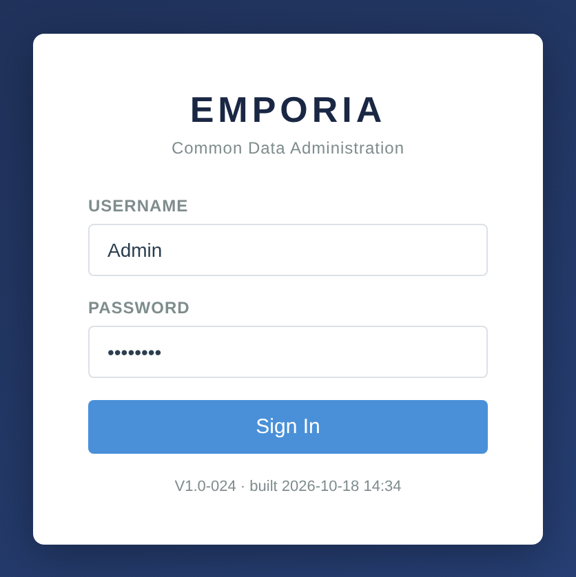
Admin with the password
changeit. Change the password at once (Admin password).The admin login is separate from the trading login. One browser can be signed in to both at the same time, and logging out of one leaves the other signed in. The admin session ends after a period without activity, like a trading session.
The screen
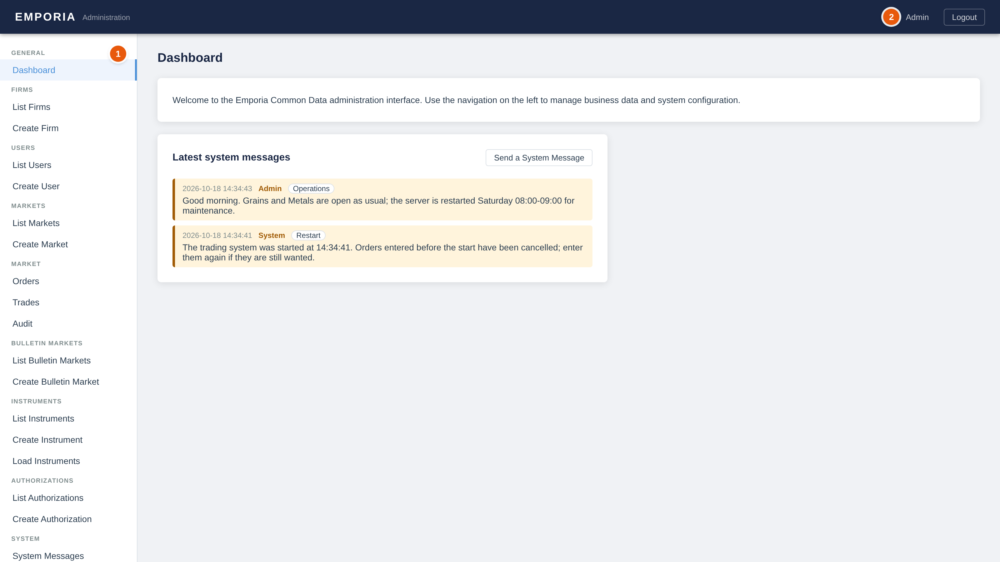
- 1The menu. Each kind of data has a List page and a Create page. On a list page, click a row to open its detail page, where you change or delete it. The Market section is for watching the trading (Market supervision).
- 2The signed-in admin and Logout.
- 3Admin Guide opens this guide in a new tab.
Fields marked with a red * are required. On a detail page, Save Changes is enabled when you have changed something. If the server refuses a change, its reason is shown at the top of the page.
Setting up a marketplace
A new marketplace is set up in this order, since each step uses the ones before it:
- Firms: create the trading members, with status ACTIVE.
- Users: create at least one user per firm, with status ACTIVE and a password.
- Markets and bulletin markets: with their type and trading hours.
- Instruments: one by one, or many at once from a file.
- Authorizations: give each firm the markets it may trade in, or
*for all.
A user can sign in once the user and the firm are ACTIVE. Without authorizations the user sees no markets.
Firms
List Firms shows every firm with its status. Click a firm to open it.
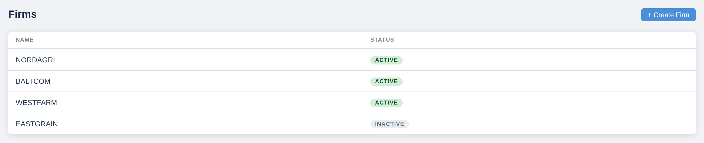
Create Firm takes a name (required; it is what the users type when they sign in, so keep it short), a status and optional contact details: address, phone, contact person and mail.
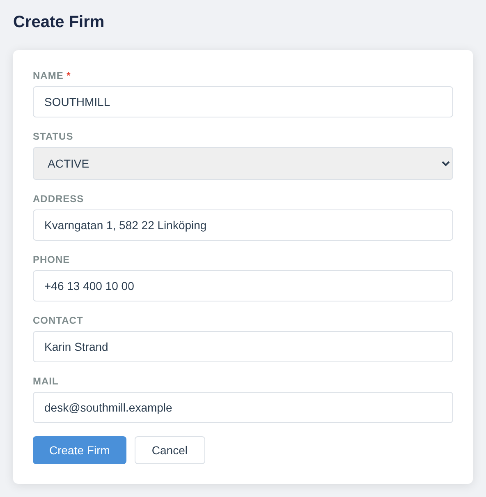
| Status | Meaning |
|---|---|
| ACTIVE | The firm's users can sign in and trade. |
| SUSPENDED | The firm's users can't sign in. |
| INACTIVE | The same as SUSPENDED: no sign-in. The default for a new firm, so you can set it up before it starts trading. |
On the firm's page you change its status and contact details. The name can't be changed.
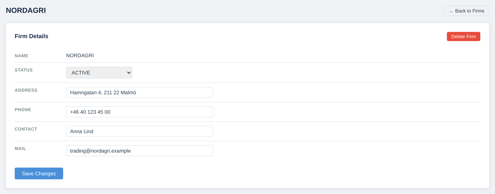
Users
List Users shows every user with firm, ID, name and status. Click a user to open it.
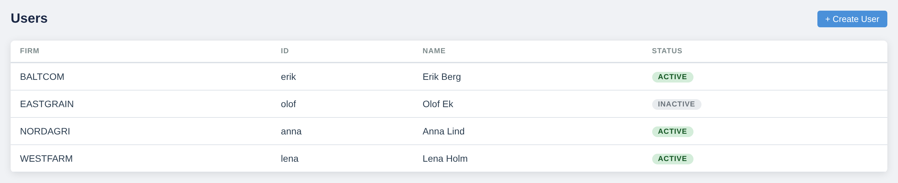
Create User takes:
- ID (required): the username for signing in. It must be unique over all firms.
- Firm: the firm the user trades for.
- Name (required), and optionally mail and phone.
- Password: the server stores only a hash of it, so it can't be read back. Tell the user the password yourself.
- Status: ACTIVE, SUSPENDED or INACTIVE (the default); only an ACTIVE user can sign in.
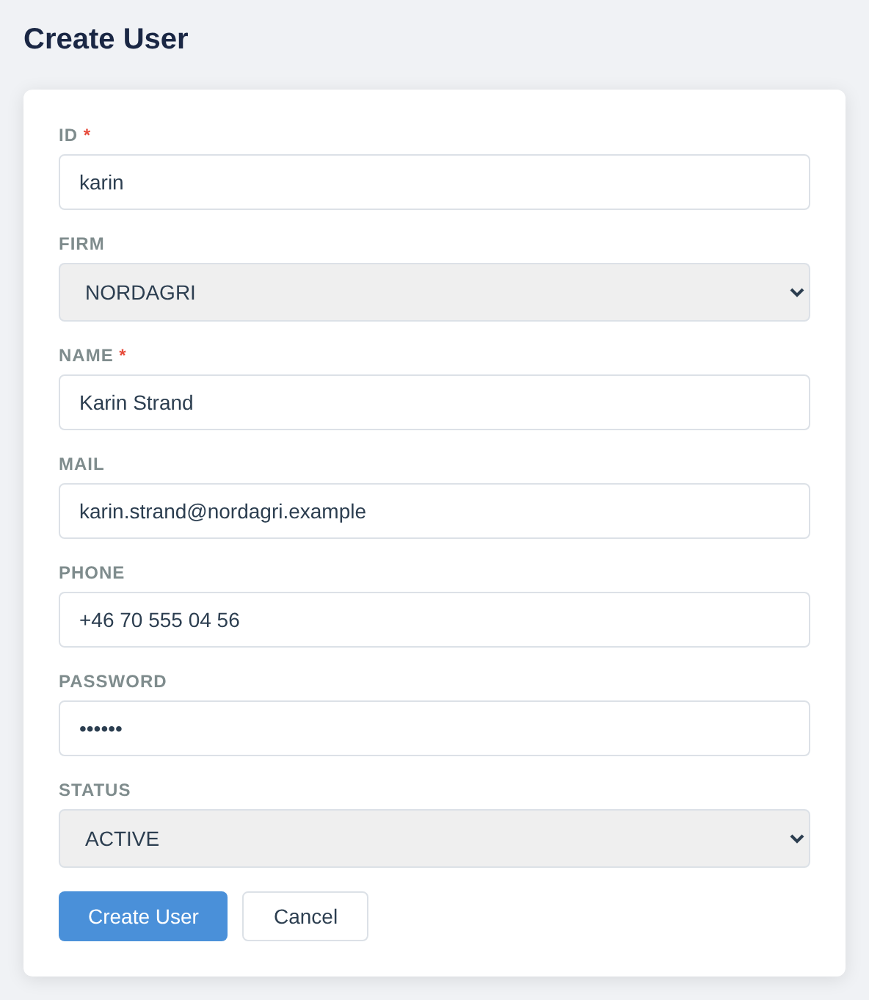
On the user's page you can change the firm, name, contact details and status. To set a new password, for example when a user has forgotten theirs, type it in New password and save. Leave the field empty to keep the current password.
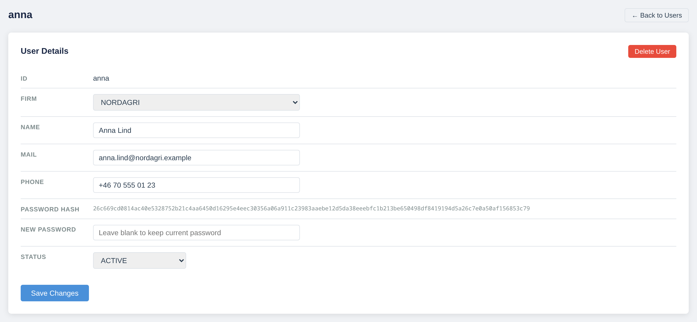
As for firms, the status and password are checked when the user signs in.
Authorizations
An authorization lets a firm see and trade in one market. The market * means all markets,
including markets and bulletin markets created later. A firm sees only the markets it is authorized for.
List Authorizations shows one firm's authorizations: choose the firm at the top. Each authorization has a Delete button.
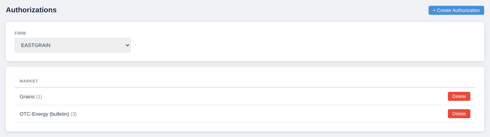
Create Authorization: choose the firm and the market, or * (all markets).
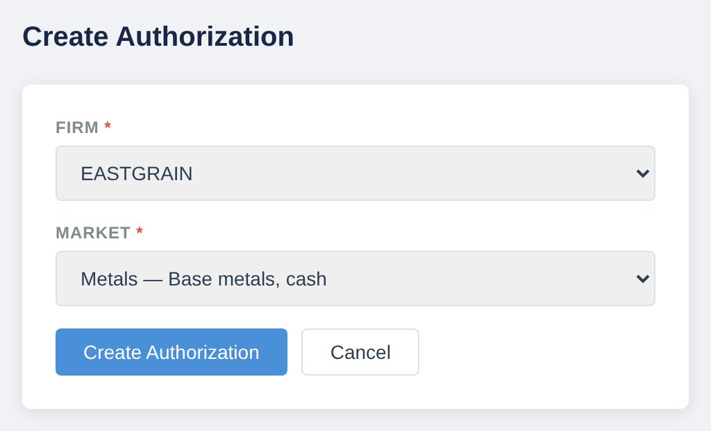
A new or deleted authorization applies at once, also to users who are signed in: a market they gain shows up with its prices, and a market they lose stops sending them updates. Their market list is updated the next time they reload the page.
Markets
List Markets shows the order book markets with their type and trading status.
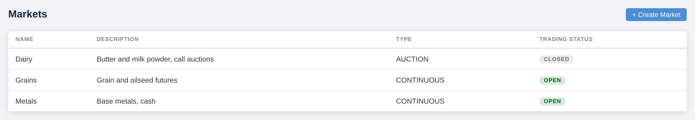
Create Market. The fields shown depend on the type:
| Field | Meaning |
|---|---|
| Name | Required. Shown to the traders. A space in the name is replaced by -. |
| Description | Optional text. |
| Type | CONTINUOUS: orders are matched at once, by price and time. AUCTION: orders are collected and traded at one price at regular times. |
| Trading Status | The state the market starts in; see Trading hours and states. |
| Open, Close | Required. HH:MM, server local time, weekdays. |
| Pre-Open Time | Continuous only, optional. HH:MM before Open: from this time orders can be
entered without being matched, and at Open the orders that cross are traded at one price. |
| Auction Interval | Auction only, required. Seconds between auctions. |
| Random Auction Interval | Seconds. In an auction market, each auction happens at a random moment within this last part of the interval, so no one can time an order to the second. |
| Inverse, Open Auction Time | Continuous only. Stored with the market but not used by the trading engine. |
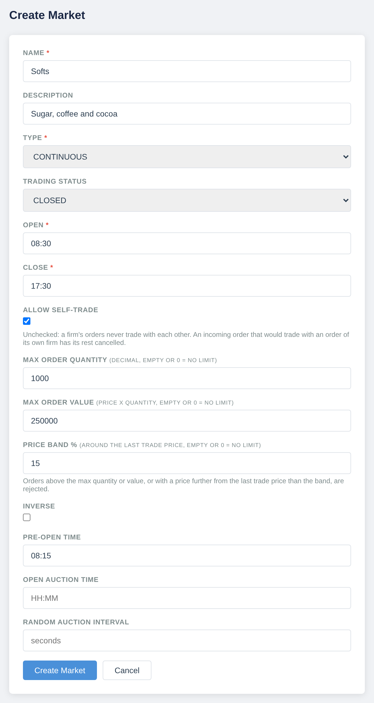
On the market's page you can change everything except the name. Delete All Orders deletes the orders of every firm in the market; see Deleting things.
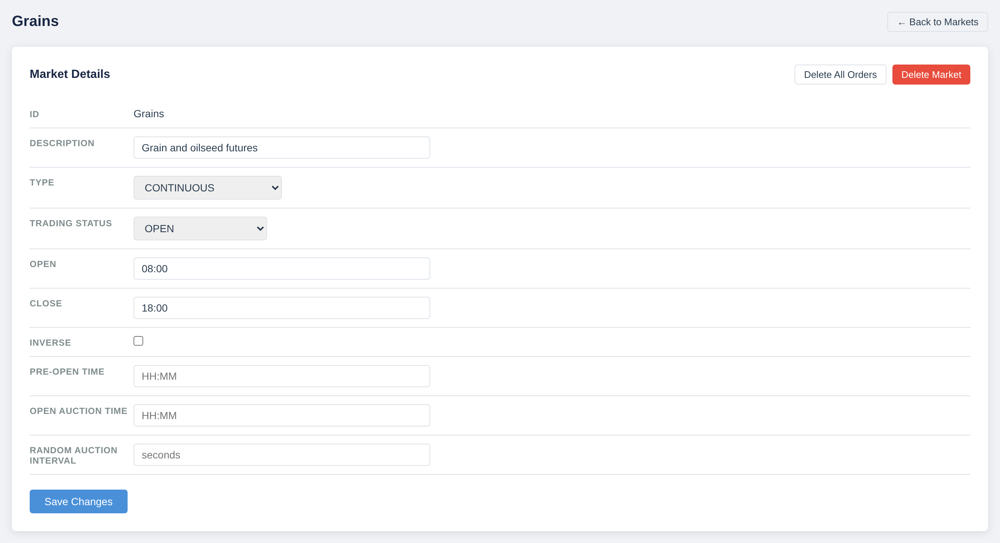
Trading hours and states
| State | Meaning |
|---|---|
| OPEN | Trading. Orders are matched (continuous) or collected for the next auction. |
| PREOPEN | Orders can be entered and deleted but are not matched. At OPEN the crossing orders trade at one price. |
| CLOSED | No trading. Orders can't be entered or deleted. |
| SUSPENDED | Trading stopped by the operator. Orders can be deleted but not entered. |
The server sets each market's state by its hours, on weekdays: PREOPEN at the Pre-Open Time (if set), OPEN at Open and CLOSED at Close. On Saturdays and Sundays the markets stay closed.
- Changing the state by hand: choose the Trading Status on the market's page and save. Your change stands until the next scheduled time, for example until Close.
- SUSPENDED is only set and lifted by hand. The schedule never changes a suspended market. Use it to stop trading in an emergency; set the market back to OPEN to resume.
- After a server restart every market comes up CLOSED, also during trading hours, because that day's Open has already passed. Open the markets by hand on their pages.
To stop trading in a single instrument rather than a whole market, suspend the instrument (Instruments).
Market supervision: orders and trades
The Market section of the menu shows the trading of all firms, each order, bulletin and trade with its firm and trader (the user who entered it). From there the market supervision can delete an order or a bulletin and reverse a trade. The Market list on both pages has two groups: the order book markets (continuous and auction) and the bulletin markets, each with an All choice of its own.
Orders
Orders lists the resting orders. Choose a market, or All order book markets, under Market: the list stays empty until you do. Firm shows one firm's orders, All firms everybody's. The list is a snapshot of the moment; Refresh reads it again.
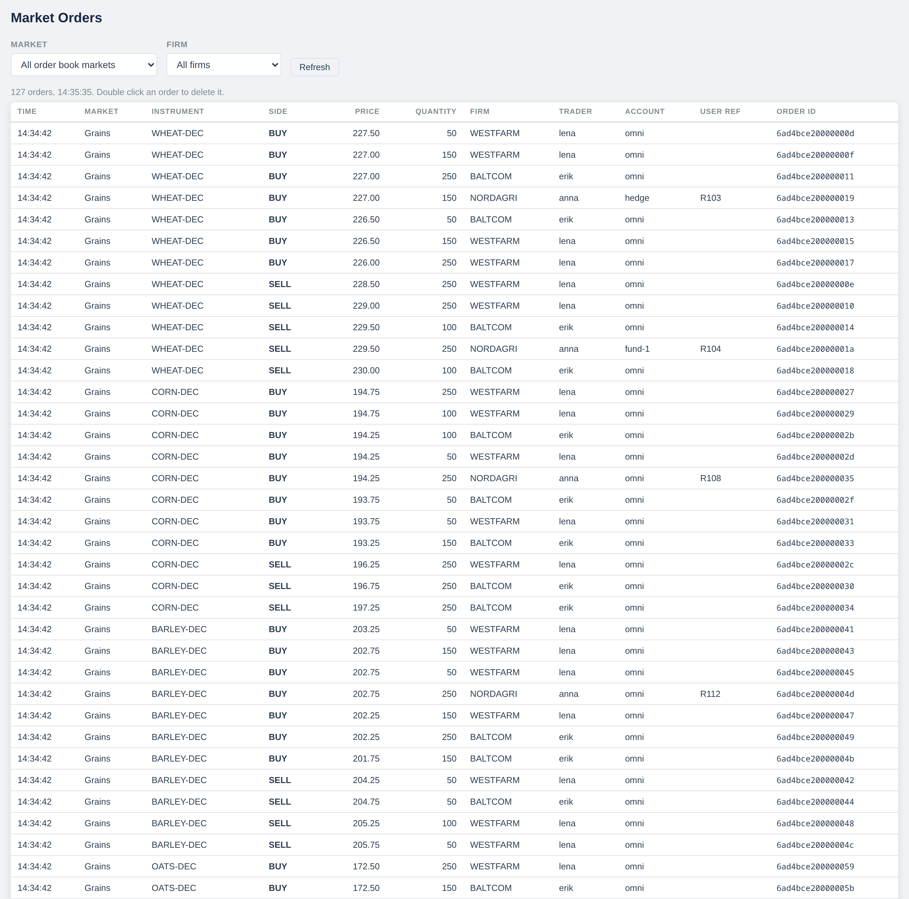
| Column | Meaning |
|---|---|
| Time | When the order was entered (hold the mouse over it for the date). |
| Side, Price, Quantity | The quantity still open, after any part already traded. |
| Firm, Trader | The firm that owns the order and the user who entered it. |
| Account | The firm's own client account for the order (omni if none was given). |
| User Ref | The firm's own reference, if it gave one. |
Double click an order to delete it. After the confirmation the order is removed, in any trading state, also when the market is CLOSED and the firm can't delete it itself. The firm sees the order disappear from its orders.
In a bulletin market the list shows the bulletins instead: side (EITHER when the bulletin has no side), price and quantity (— when not given), the quantity remaining, the firm and trader, the state, when it expires, and a pending offer with the offering firm and trader. Firm shows the bulletins of the firm and those it has an offer on. Double click a bulletin to delete it, in any trading state; a pending offer on it is cancelled, and both firms are told.
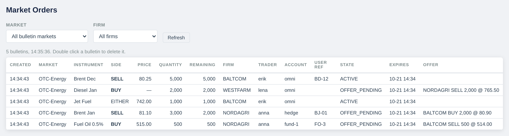
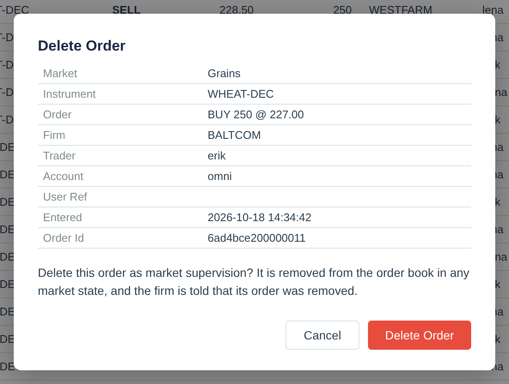
Trades
Trades lists the trades of one day, latest first: today's, or another day's chosen under Date. Choose a Market or all of them, and a Firm to see only the trades where that firm bought or sold. Each trade shows the buyer and the seller with their trader and client account.
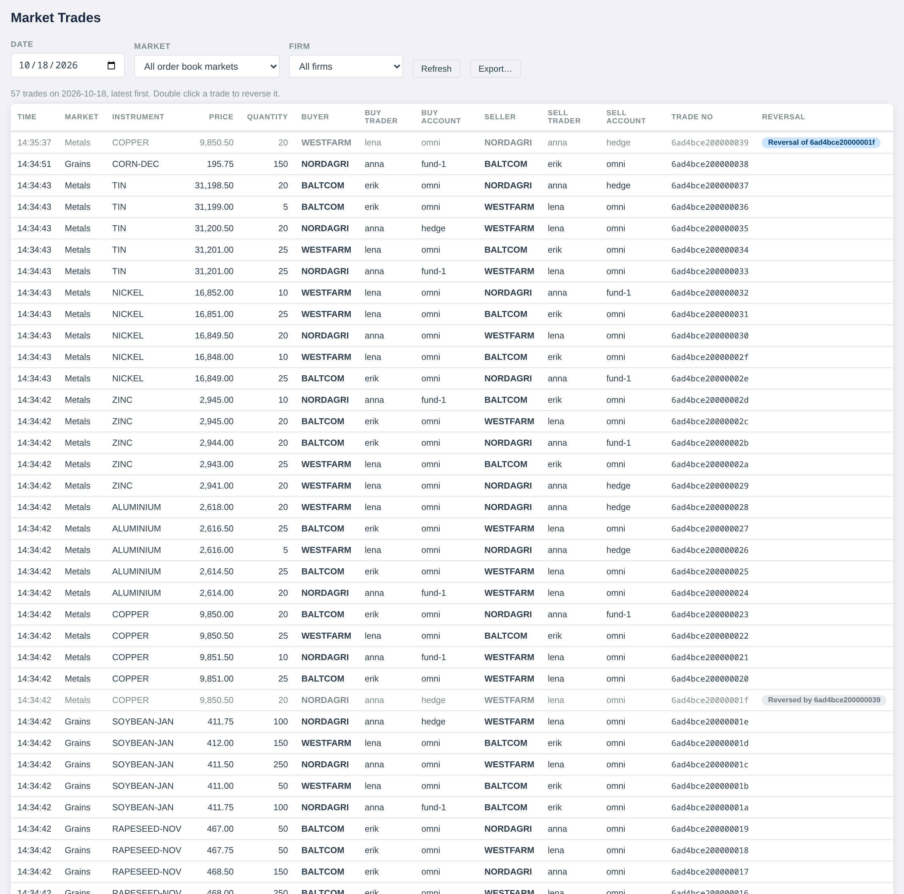
In a bulletin market the list shows its bulletin trades, the instrument as the bulletin's free text. They are reversed in the same way: the reversal is a new bulletin trade with the roles swapped, both firms are told, and it doesn't change the instrument's last bulletin price.
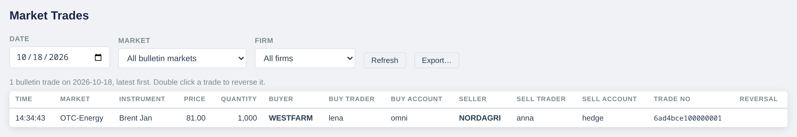
Export… saves the listed trades, with the filters applied, to a file on your computer as JSON or XML: prices and quantities as shown, the time with milliseconds, and both sides with firm, trader, client account, reference and order id. The file name is filled in from the date, market and firm; you can change it. In Chrome and Edge, Save… opens a save dialog where you choose the folder (and can still change the name); other browsers save the file in their download folder.
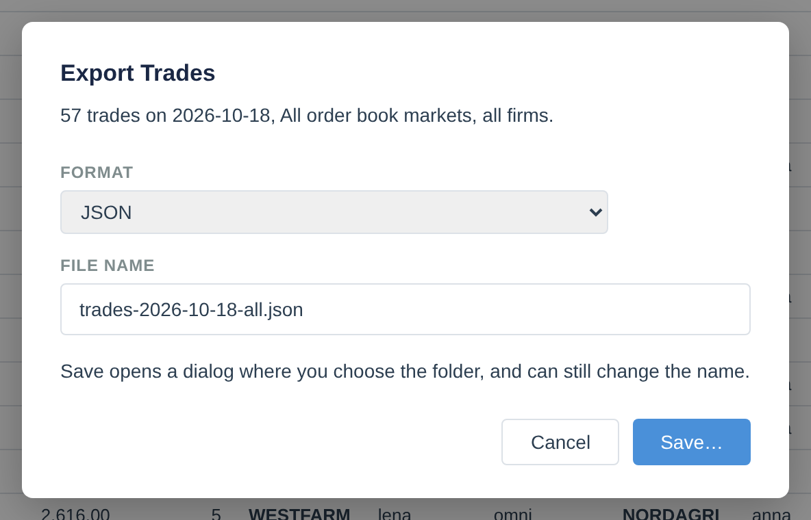
Double click a trade to reverse it, for example after a trade made by mistake. The reversal is a new trade at the same price and quantity in which the roles are swapped: the seller buys and the buyer sells, each with the client account of the original trade, so both firms' positions are back where they were before the trade. Both firms are told at once, as for any trade (the popup says Trade reversal), and the reversal is listed among their trades as reversal of the original trade number.
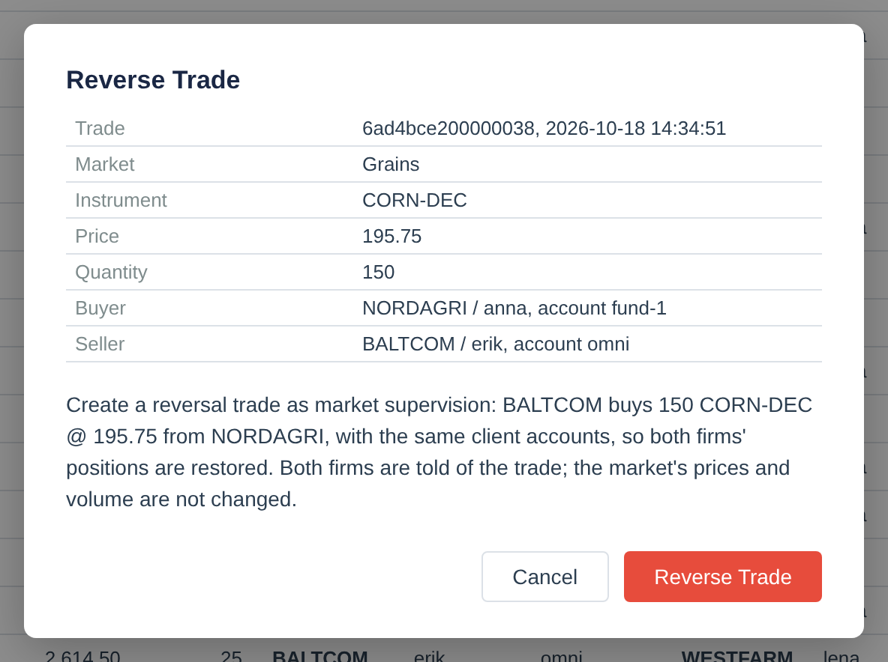
- A reversal is not a market trade: the market's open, high, last price and volume, and the public list of the day's trades, stay as they were.
- A trade can be reversed once. The Reversal column shows Reversed by on the original and Reversal of on the reversal; a reversal can't be reversed itself.
- A trade of an earlier day can be reversed too. The reversal is made now and is listed under today's date.
Audit
The server keeps an audit log: every request made to it, by the trading screens, by trading programs and by this admin interface, with its answer; every trade and bulletin trade with both sides' firm and trader; and each start and stop of the server. Each message has the time it was made, to the millisecond, and the trading user and firm (or the admin) it came from. Passwords and session ids are never written to it.
Audit shows one day of it: today's, or another day's chosen under Date. Changing the date loads that day and replaces what was shown; Refresh loads the day again with what was added since. The other filters apply at once to the loaded day:
| Filter | Shows |
|---|---|
| Start time, End time | Messages from and up to these times (both included). |
| Firm | Messages of the firm: its users' requests and answers, and the trades it bought or sold in. |
| Trader | Messages of the users whose name contains the text: their requests (also their logins) and answers, and their trades. |
| Type | Requests, responses, trades, bulletin trades, or the server's starts and stops. |
| Search | Messages containing the text anywhere, e.g. an order id, a trade number or an instrument. |
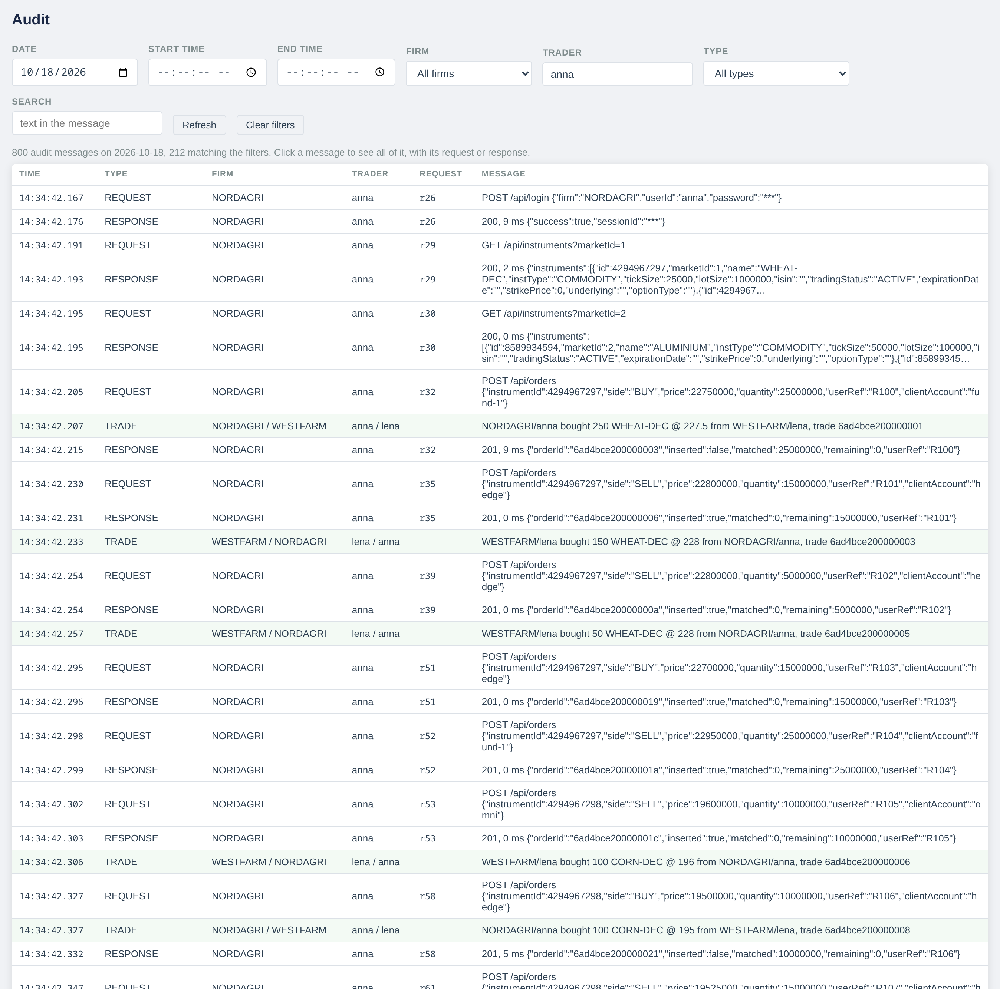
Each line is one message. A request and its answer have the same Request number (r1, r2, ...; the numbers start again at each server start). The Message column gives the request's method and path with what was sent, the answer's status (red when it failed) and time taken, or the trade: who bought from whom, how much at what price. Prices and quantities in requests and answers are as the programs send them, as whole numbers multiplied by 100000; in trades they are as shown on the screens. Click a line to see the whole message, with its request or answer.
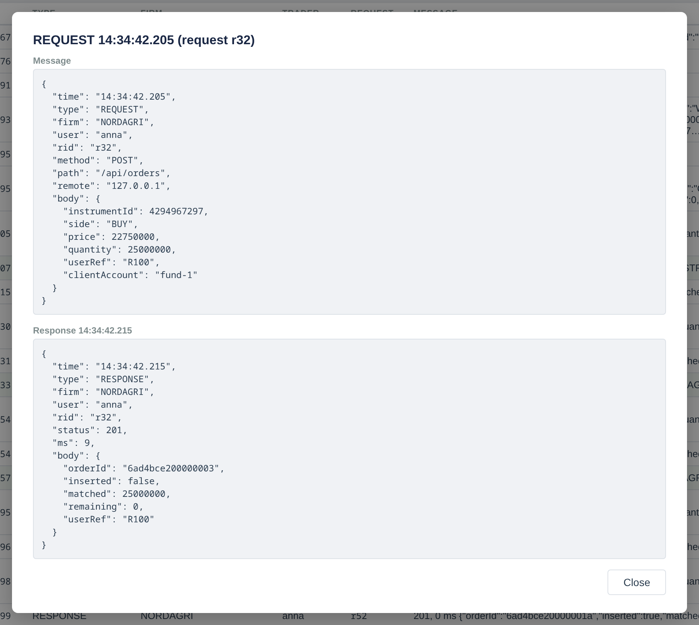
At most 5000 lines are shown; narrow the filters to see the others. The audit files are kept on the
server, one per day (audit-yyyy-MM-dd.log in its audit directory); they are never changed or
deleted by the server.
Bulletin markets
In a bulletin market, firms post bulletins about what they want to buy or sell, and other firms make offers on them. Nothing is matched automatically. The instrument of a bulletin is free text, so instead of creating instruments you say which names are allowed.
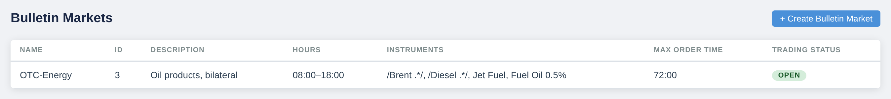
Create Bulletin Market:
| Field | Meaning |
|---|---|
| Name, Description | As for markets. |
| Trading Status | CLOSED, OPEN or SUSPENDED. There is no pre-open. |
| Open, Close | Required, HH:MM. Opened and closed by the schedule like other markets. |
| Instruments | Required, one entry per line. A name is matched exactly, with upper and lower case.
An entry between slashes is a pattern (a regular expression) that must match the whole name:
/Tractor .*/ allows Tractor John Deere 6R and any other name that starts with Tractor . |
| Max Order Time | Required, hh:mm. A bulletin is removed when it has been in the
market this long; the hours may be more than 24, such as 168:00 for a week. |
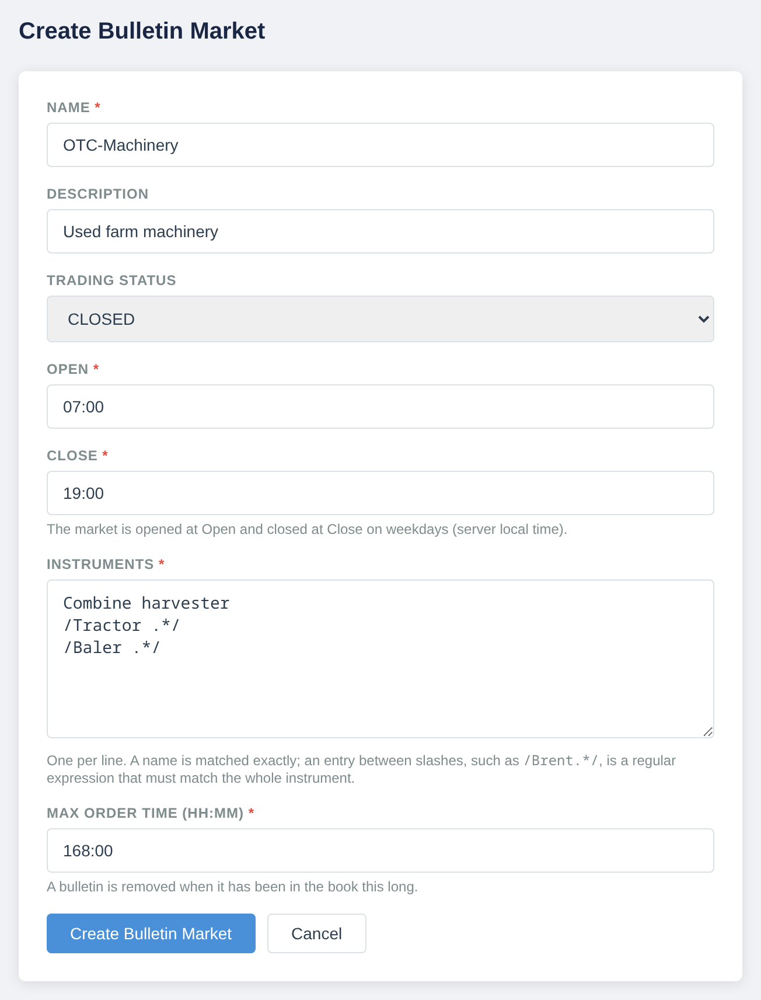
On the bulletin market's page you change everything except the name. A new Max Order Time applies to bulletins added after the change. Delete All Bulletins removes the bulletins of every firm; a pending offer on one of them is cancelled.
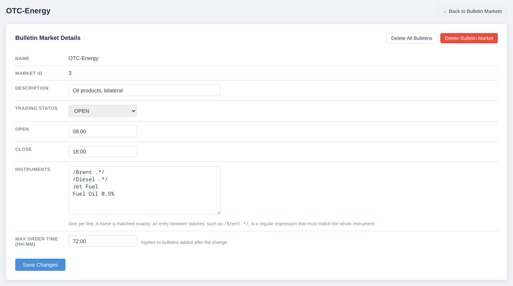
Firms need an authorization for a bulletin market just as for other markets; * includes them.
Instruments
List Instruments: choose a market to list its instruments. The Suspend and Resume buttons stop and restart trading in one instrument: while it is SUSPENDED, orders can't be entered or changed, but they can be deleted. Click the name to open the instrument.
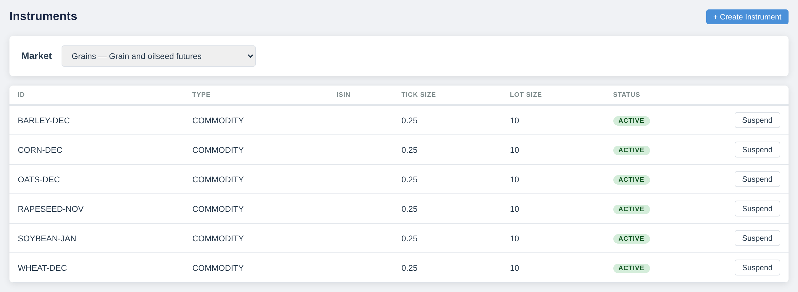
Create Instrument:
| Field | Meaning |
|---|---|
| Name | Required. Shown to the traders. A space is replaced by -. |
| Market | Required. The order book market it is traded in. |
| Type | Required: COMMODITY, EQUITY, OTC, FUTURE or OPTION. |
| ISIN | Optional. |
| Tick Size | Required. Prices must be a multiple of it, e.g. 0.25. |
| Lot Size | Required. Quantities must be a multiple of it, e.g. 10. |
| Expiration Date, Strike Price, Underlying | Required for FUTURE and OPTION. Option Type (CALL or PUT) is required for OPTION. |
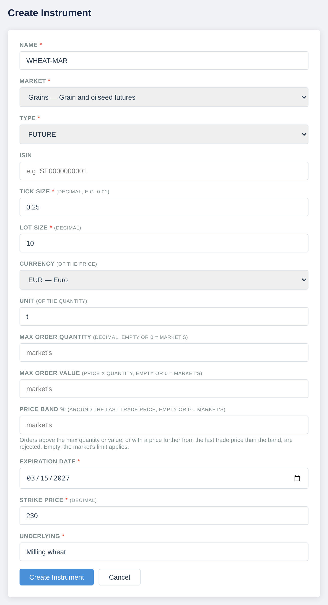
The instrument's page shows its trading status with Suspend Trading / Resume Trading, and its details, which you can change.
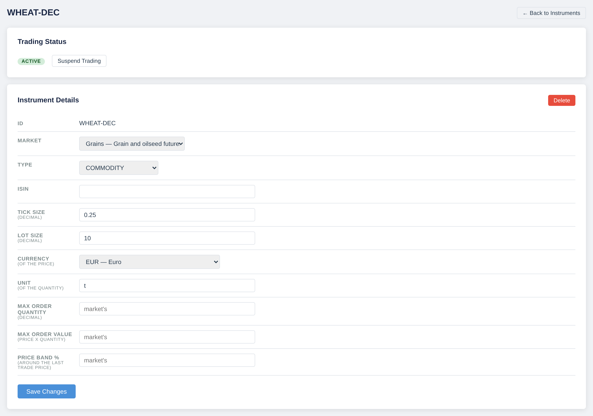
Loading instruments from a file
Load Instruments adds and deletes many instruments at once from a JSON file. Drop the file on the page, or click to choose it. The page shows what the file contains; Process File runs it.
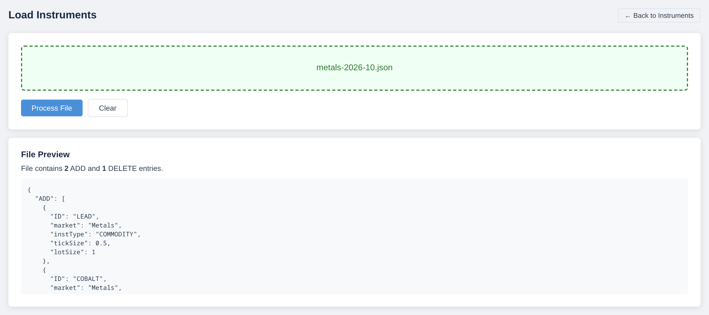
The file has a list ADD of instruments to create and a list DELETE of
instruments to delete; either may be left out:
{
"ADD": [
{ "ID": "LEAD", "market": "Metals", "instType": "COMMODITY", "tickSize": 0.5, "lotSize": 1 },
{ "ID": "COBALT", "market": "Metals", "instType": "COMMODITY", "tickSize": 1, "lotSize": 1 }
],
"DELETE": [
{ "ID": "8589934699" }
]
}
- ADD:
IDis the instrument's name.marketis the market's name or number. The other fields are those of Create Instrument:instType,tickSize,lotSize,isin,expirationDate,strikePrice,underlying,optionType, andtradingStatus(SUSPENDED, otherwise the instrument is ACTIVE). Prices and sizes are decimals. - DELETE:
IDis the instrument's number, as stored in the database (the market's number in the high 32 bits).
Each entry is handled on its own: an error in one doesn't stop the others. The result lists every entry with OK or ERROR and the reason.
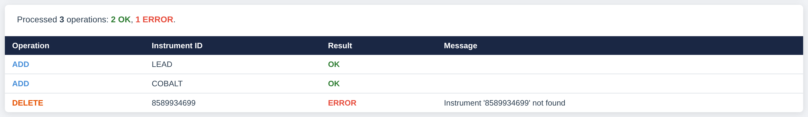
Loading the same file twice adds the instruments twice, so check the list before loading again.
Deleting things
Every delete asks for confirmation first and can't be undone.
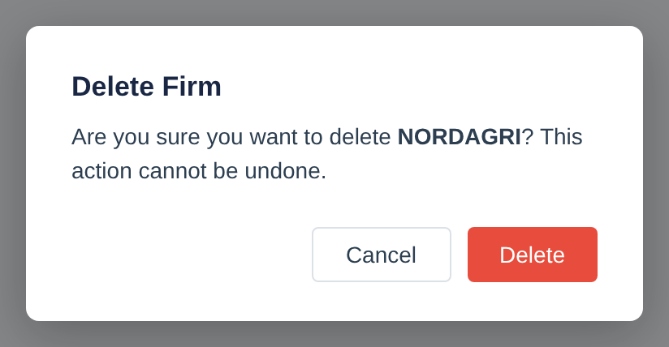
| Delete | What happens |
|---|---|
| Firm | Its authorizations are deleted with it. Its users are not: delete or move them first. Its trades stay in the trade history. |
| User | The user can no longer sign in. The firm's orders and trades are not affected. |
| Authorization | The firm loses access to the market at once. |
| Market | Refused while the market has orders or instruments. Use Delete All Orders and delete its instruments first. A market number may be used again by a new market, which is why it must be empty. |
| Bulletin market | Refused while it has bulletins. Use Delete All Bulletins first. |
| Order, bulletin | Market › Orders: any firm's order or bulletin, in any trading state (Market supervision). |
| Instrument | Deleted at once, even if it has orders. Delete its orders first: suspend it, and ask the firms to delete their orders, or use Delete All Orders on its market. |
Delete All Orders and Delete All Bulletins remove everything in the market, for every firm and in any trading state. The firms see their orders or bulletins disappear.
System messages
System Messages (in the System section of the menu) sends a message to every trading user, e.g. that a market opens late, that trading is halted, or about maintenance. Type the message (at most 512 characters, fewer with special characters) and, if you like, a tag, and click Send to All Users.
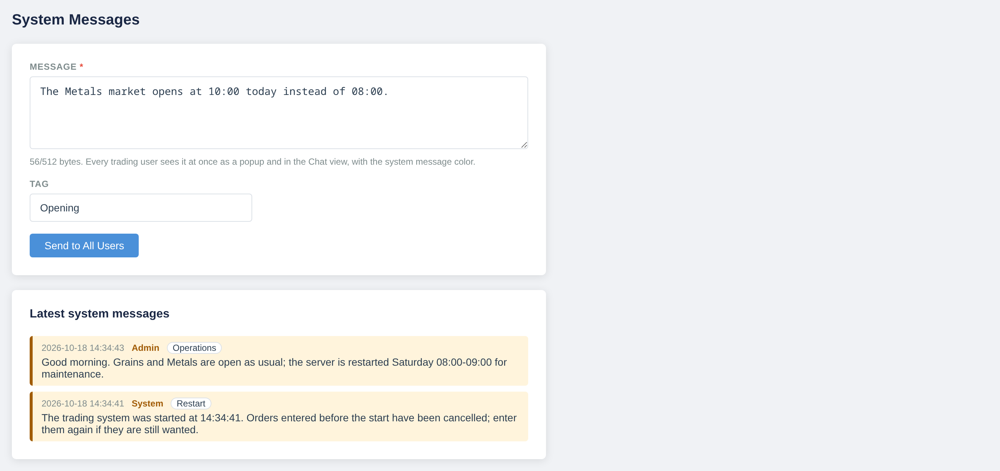
- Users who are signed in get it at once, as a popup in every view. It is also in the Chat view, with a light orange background and System message instead of a sender.
- The latest 10 system messages are shown to every user in the Chat view, also after signing in later or on another day, and on this page and the Dashboard of the admin interface, newest first, with the admin who sent each.
- The server sends one itself each time it starts (sender System, tag Restart), telling the users that the orders entered before the start have been cancelled.
- A system message can't be changed or deleted. Send a new one to correct it.
Admin password
Change Password changes the password of the signed-in admin. Type the current password and the new one twice.
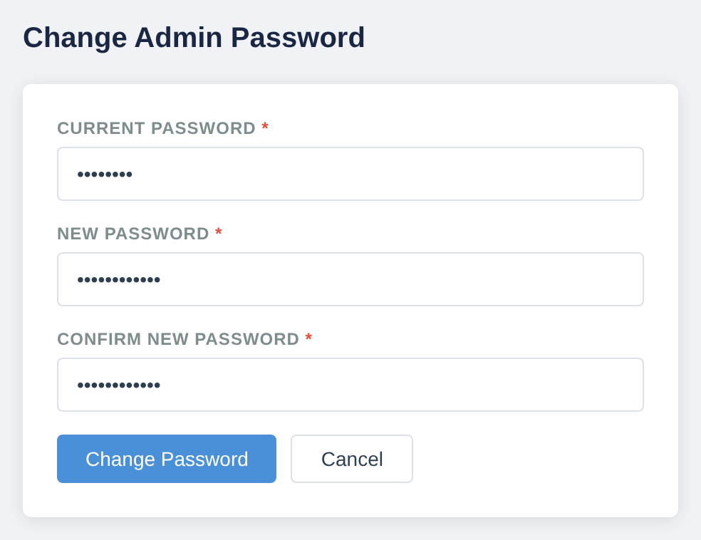
The Settings menu item is reserved for later and has no page yet.